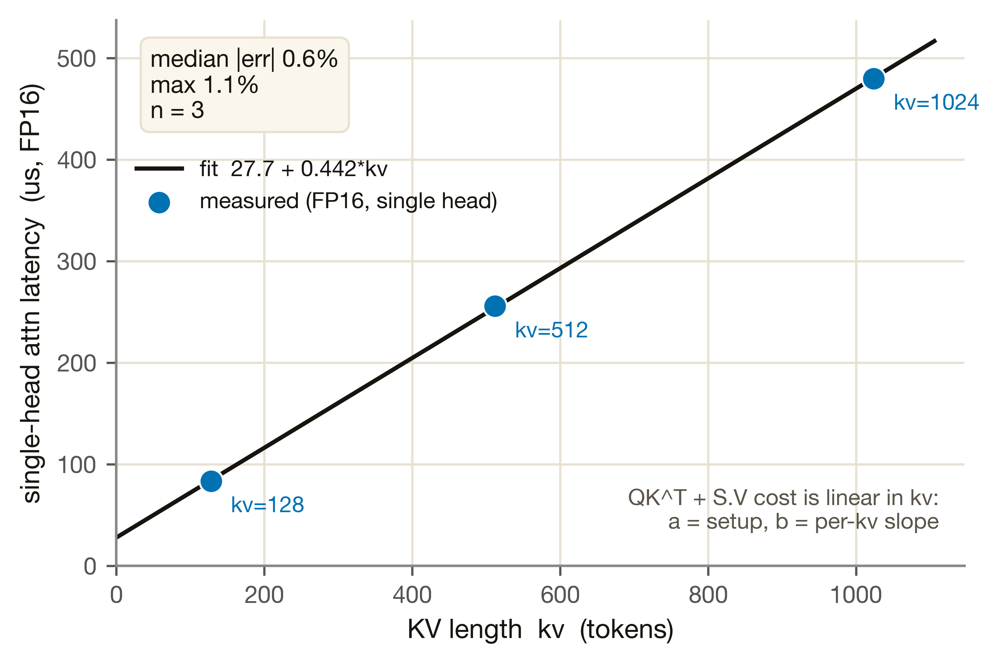
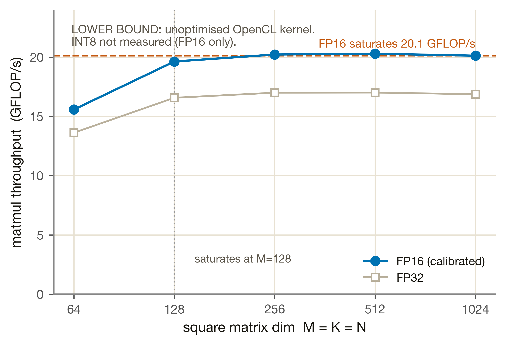

Mali-G610 GPU 單元
CIM 釘權重做投影 GEMM；attention 的兩個 bmm 是 runtime activation、沒有可駐留的權重，所以交給 GPU。M4-GPU 的基本功能就是這個注意力 offload baseline：單一 head 的 QK^T + S·V 延遲，量在 Mali-G610 FP16。
M4-GPU 在異構 SoC 裡是注意力的 offload 接收方，不是主算力。分工邏輯：CIM 做 weight-stationary 的投影 GEMM（Q/K/V/O、FFN gate/up/down），而 attention 的 QK^T 與 S·V 是 activation × activation 的 bmm——每個 decode step KV-cache 都長大，沒有可釘在 crossbar 上的固定權重。
① 注意力 offload（基本功能）——單一 attention head 的 QK^T + S·V（decode 步，FP16）。強行讓 CIM 做 attention 等同每步重載長大的 K/V，成本以數十毫秒計（CIM-attention penalty 31–46 ms/token，Phase 1.1 P7）；同樣 kv 長度 GPU 只要幾十到幾百 µs。② roofline 換型號槽——一個可換 GPU spec 的解析 roofline（FP16 校準），與 micro-benchmark 並存。
M4-GPU 是有真矽、attention 已驗證的單元（Mali-G610 r0p0 實測），所以 calibrated 與 fitted 亮著、simulated 熄滅（GPU 有矽、不掛 heavy-sim）。關鍵缺口：只量了 FP16，INT8 零資料——這是「缺一個量測」、不是「用模擬補」，§5 誠實呈現。
量測平台：Aetina Metis Alpha 板上的 Mali-G610 r0p0（RK3588），以自寫 OpenCL kernel 實測，dtype = FP16。M4-GPU 的基本標的是 attention 的 offload 延遲——量單一 head 的 QK^T + S·V 在三個 KV 長度（kv ∈ {128, 512, 1024}）的延遲。下圖把這 3 點攤開：

a + b·kv。為什麼是直線？decode 的 QK^T（[1,hd]×[hd,kv]）與 S·V（[1,kv]×[kv,hd]）都對 kv 個元素各做一次，per-step 成本結構上線性於 kv——不是硬湊的形式。三點殘差 ≤ 1.1%（median 0.6%），是全報告擬合誤差最低的單元，反映 attention 對 GPU 是規律的線性工作。
圖 M4·GPU·1 · 來源 m4_gpu.json › attn_offload_gate（meas_us）+ m4_gpu.json 參數 a/b · 腳本 tools/plotting/site_gpu.py
此外也量了 GPU 做方陣 matmul 的峰值吞吐（ksweep），FP16 在 M=128 後飽和於 20.12 GFLOP/s——這是自寫未優化 kernel 的值、僅代表下界（見 §2 roofline 圖）。Decode-GEMV（M=1）利用率更差，正好印證「matmul 該留給 CIM」的前提。
注意力 offload：a + b·kv 線性擬合
怎麼來：QK^T 與 S·V 兩個 bmm 的 per-step 工作量都正比於 kv（KV-cache 長度），所以延遲對 kv 是仿射（一條直線）。每個參數的物理意義：
| 參數 | 值 | 物理意義 |
|---|---|---|
| a（固定開銷） | 27.742 µs | 截距：啟動一次 attention 的固定成本（kernel launch、QK^T/S·V 設定），與 kv 無關 |
| b（per-kv 斜率） | 0.44208 µs/kv | 斜率：每多一個 KV token 的邊際成本。kv 從 128→1024，延遲幾乎全由這項決定 |
a / b 為擬合常數（committed in m4_gpu.json params），非門檻指標，故直書原值；所有資料量（誤差統計等）一律由 committed JSON 注入，如 §4 的 median 0.6%。
roofline 換型號槽：max(compute, memory)
Phase 1.2 補一個可換型號的解析 roofline（GpuRooflineModel），與 micro-benchmark 並存而非取代，目標是「換一顆 GPU = 換 spec 檔、引擎不動」。max(compute, memory) 讓同一式自動涵蓋兩 regime：decode（M=1 GEMV）落 memory-bound，prefill / 大方陣落 compute-bound。兩個校準係數均對 mali_matmul.json 的 FP16 點擬合：eff_compute_fp16 = 0.01965（飽和 20.12 ÷ FP16 峰值 1024 GFLOP/s）、mem_eff_BW_GBs = 1.256（16 個 decode-GEMV 點過原點最小平方）。

eff_compute_fp16 即以此飽和值校準、故繼承下界性質。INT8 完全沒量（kernel 只有 FP32/FP16），圖上沒有 INT8 線是誠實的空缺、不是省略。
圖 M4·GPU·2 · 來源 mali_matmul.json › ksweep（f16/f32_gflops）+ m4_gpu_roofline.json › saturated_f16_gflops · 腳本 tools/plotting/site_gpu.py
M4-GPU 不掛任何 heavy-sim 引擎——GPU 有真矽，attention 直接量。本節的「模擬」= roofline 解析槽對 Phase 1.1 量測點的趨勢比對（30 點全集）。它不是精確校準，而是「抓到 decode/prefill 兩個 regime 的形狀趨勢」。
| 統計量 | 值 | 說明 |
|---|---|---|
| median |相對誤差| | 2.7% | roofline 抓到兩 regime 形狀趨勢（非精確校準宣稱） |
| p95 |相對誤差| | 36.1% | 長尾來自離群點（1b decode GEMV 異常慢、最小 M=64 ksweep launch 開銷大） |
| max |相對誤差| | 65.8% | 最差點（1b K=N=2048 decode GEMV，實測異常慢、roofline 樂觀） |
roofline_fit 欄位。沒有數值驗收 gate——不存在 INT8 矽晶片，不能製造假 gate。| 指標 | 值 | 門檻 | 結果 |
|---|---|---|---|
| median rel_err | 0.6% | ≤ 10% | ✅ PASS |
| p95 rel_err | 1.1% | ≤ 20% | ✅ PASS |
| max rel_err | 1.1% | — | 呈現不隱藏 |
attention offload 是 M4-GPU 的已驗證交付物，median 0.6% 是全報告擬合誤差最低的單元。Phase 2 端到端 recompose 中 GPU 只參與 attention offload、不用 GEMM 絕對值，因此 GEMM 下界性質不影響系統層 gate。
| 項目 | median |err| | p95 |err| | 性質 |
|---|---|---|---|
| roofline vs 1.1（30 pts） | 2.7% | 36.1% | 趨勢擬合（FP16），非嚴格下界 |
predict() 對 int8 workload 仍用 FP16 校準天花板，provenance 明標「dtype=int8 has ZERO GPU data」。這是缺一個量測，不是用模擬填補——詳見 §5。| 項目 | 狀態 |
|---|---|
attention offload attn_bmm_us(kv) 介面 | ✅ 凍結，calibrated（median 0.6%） |
MaliGpuModel / m4_gpu.py | ✅ 模組化，Phase 2 直接沿用 |
roofline 換型號槽 GpuRooflineModel | ✅ 凍結合約 {latency_us, bound, provenance}，換 spec 不改引擎 |
| INT8 GPU GEMM（dtype=int8 零資料） | ⚠ 缺量測（非模擬）——Phase 2 需收集 Mali INT8 kernel 資料 |
| FP16 GEMM 絕對吞吐 20.12 GFLOP/s | ⚠ 下界（未優化 kernel）；recompose 不用絕對值 |
| roofline 可轉移性 | ⚠ 不可轉移（5 飽和點）；換 GPU 需重新量測重跑 fit |
| kv 外推 > 1024（LongBench ~12k kv） | ⚠ 外推（12×；線性形式結構正確，待 kv∈{2k,4k,8k} 補點） |
| heads × layers 聚合 | ⚠ Phase 2 watch-item（單 head 公式 × heads × layers，overlap/合批未驗證） |
| FP32 峰值 512 GFLOP/s | ⚠ assumption（可能低估 2–4×；FP16 校準不依賴此值） |
最大缺口 = INT8 是缺一個量測、不是模擬。attention offload（FP16）已驗證、介面穩定，Phase 2 可直接沿用。但若 Phase 2 需要 GPU 做 INT8 GEMM，現況零資料不可用，必須先收集 Mali INT8 kernel 量測。其餘為 kv >1024 外推補點、heads×layers 聚合驗證、FP32 峰值待量測——都不影響已驗證的 FP16 attention 路徑。
- 注意力 offload 門檻：
validation/reports/phase1.1/m4_gpu.json › attn_offload_gate.median_relerr / p95_relerr / max_relerr - 擬合參數 a / b：
simulator/models/params/m4_gpu.json › attn_bmm_a_us / attn_bmm_b_us_per_kv - FP16 ksweep 飽和：
validation/reports/phase1.1/m4_gpu.json › ksweep_saturation.g_sat_gflops_f16 = 20.12（LOWER BOUND） - roofline 趨勢驗收：
validation/reports/phase1.2/m4_gpu_roofline.json › error_vs_1p1_measured（median/p95/max_abs_relerr, frac_pred_le_measured） - roofline 校準係數：
validation/reports/phase1.2/m4_gpu_roofline.json › calibrated_fit（eff_compute_fp16, mem_eff_BW_GBs, saturated_f16_gflops） - 原始量測：
measurements/aetina/mali_matmul.json › results（groups attn / ksweep / proj_decode, FP16） - INT8 / FP32 誠實標籤：
validation/reports/phase1.2/m4_gpu_roofline.json › honesty.int8 / fp32_peak_512 - contract / 驗收條件：
validation/contracts/m4_gpu.yaml